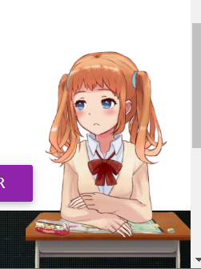
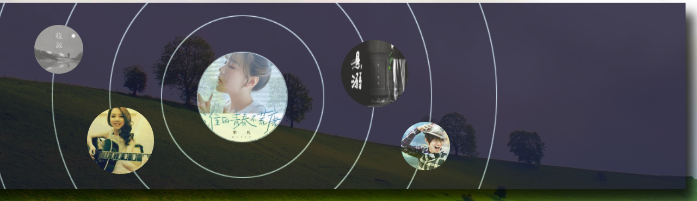

《Web应用基础》课程结业报告
1. 实验介绍
本次实验主要采用静态网站的形式，旨在搭建一个属于自己的个人网站，本网站一共有5页，
分别是，“首页”，“pets”页，“sports”页,“music Introduction”页，以及“Listening music”页，首先从整体介绍自己，然后分
音乐、运动、宠物三个方面来逐一介绍。本网站主要使用MDB框架，部分使用国产的layui框架的相关功能，从而搭建风格多样的网页，
实现动态的网页效果。
2. 实验目的
- 巩固所学的html、css、js等相关前端网页知识，熟悉MDB框架的使用方式以及css样式。
- 学习使用相关网页知识搭建属于自己的个人网页。
- 学习使用Canvas制作非常炫酷的动态效果。
- 学习使用现代网页流行的相关api或者插件为自己的个人网站增加亮点。
- 了解并学习现代流行的优秀网页框架(layui框架)的使用以及运用layui提供的功能为自己的个人网站"加分"。
3. 开发过程
以下主要选取几个核心的部分进行开发过程的简述
- "首页"的开发： 首页的开发主要采用了MDB框架，同时页面的布局也是响应式的
，可以适应不同的终端浏览，从而达到不同的浏览效果；不仅如此，这里还为其添加了现代网页常有的Live2D看板娘（更通俗地讲，就是一个动态的动漫人物），
可以点击它并得到相应的回应，进而增加用户的体验效果。
 (左图为Live2D看板娘)
- "pets"页的开发： "pets"页的开发主要引入了bootstrap，Jquery框架，同时采用canvas等制作出动态的网页背景，
使得网页看起来更有动感；其次，这里主要采用以卡片的形式来传递信息，每张图片其实就是一张卡片，点击它，可以实现
3D的翻转效果，翻转之后，便是每个pet相对应的简介了。
-
"sports"页的开发： "sports"页的开发也是引入了jQuery的，同时，为了实现丰富的动画效果，这里引入了TweenMax(注：
TweenMax是GreenSock动画平台的核心插件,GreenSock是一套用于在所有主流浏览器中制作高性能HTML5动画的工具。)，也使用了
TextPlugin等插件，以达到更加炫酷的效果。本页主要以图片加以旋转来代替往日平凡的静态的导航，点击每一张图片，实际上就是在点击导航，
之后图片旋转，并显示出相应的内容，以此方式，介绍每一种运动形式。
-
"music Introduction"页的开发： 该页主要以MDB为前端框架，结合jQuery，canvas等制作出丰富的动态背景效果，毫无疑问，这里也是响应式的布局，每一个小部分
对每一首歌曲进行简介，从而让用户在欣赏动态的网页背景的同时，还能更好地了解每一首歌曲，进而提升用户浏览网页的体验感。
-
"music Listening"页的开发： 这是整个网站的最后一页，为了缓解用户在浏览网页所产生的疲劳，本页主要提供了几首精美的歌曲以供用户欣赏，
简言之，本页主要的功能就是“播放音乐”，其实现的主要框架有layui以及jQuery，每点击一首歌曲的图片便可对应每一首歌曲的播放与暂停，同时也对应切换
相应的图片。

(注：点击该页这部分上面的每一张图片，也可实现歌曲的播放与暂停)
4. 总结
4.1 所遇问题及解决方案
1. 在实现动态的网页背景时，发现通过普通的css样式
是比较难以实现的，经过查资料发现，canvas是一个很好的工具，它是
HTML5提供的API，可用于很容易的创建2D/3D的图形、图像以及动画。2. 在实现一些比较炫酷的动态效果(如：Live2D看板娘，旋转导航栏等
)时，引入一些已经开发好的插件比直接用css以及js实现来的更加方便。3. 在制作网页时，资源的收集也是一大难点，
往往自己想要的图片等在网上都不能很好直接使用，这时候就需要动用Ps等图片处理工具，或者在线的一些图片处理工具加以改进处理
才能继续使用。4. 有些功能在MDB框架里面没有很好地体现，这时候就需要寻找并学习新的、合适的框架，如：layui等。
5. 实现一些新的css样式时，需要边学边做，即学即用。
4.2 待解决的问题
网页的整体效果有待提高；网页的内容还能更加丰富；各个子网页与主页的风格有待统一(实现的时候没考虑到这点。)；网页的排版还不是很好。
4.3 收获与不足
从本实验中，不仅练习了HTML前端网页相关知识的使用，巩固了相关知识，同时，也
学习到了新的框架，如：layui等，学习到了更多了插件以及网页效果的实现方式，提高了学习的能力。但不足之处就是没有从整体上统筹每个网页的风格，以致于各个网页的风格有异；还有就是对新知识地应用场景没有较好地把握，有些东西用得比较“冗余”。
4.4 网页的改进方案
从整体上改进每个网页的风格，做到各个网页的风格统一；对每个网页的排版再加以细化，使其更加美观；丰富网页内容。